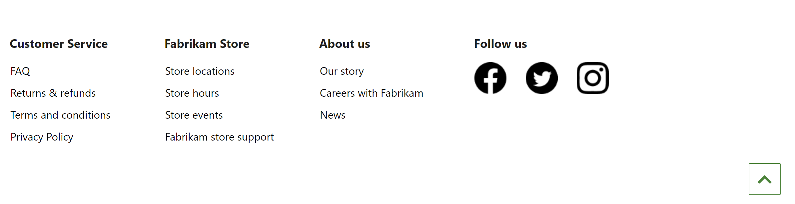

Footer module
This topic covers footer modules and describes how to create them in Microsoft Dynamics 365 Commerce.
Overview
The footer module is a special container that is used to host the modules that appear in the page footer. For example, it can include links to various pages across the site, such as Contact Us and Store Policies pages.
The following image shows an example of a footer module on a site page.

Footer module properties
Like most containers, a footer module supports properties for the heading and the width. It also supports the addition of multiple footer category modules. Each footer category module that is added is rendered as a column in the footer module.
Modules available in a footer module
Footer items – A footer items module can contain a heading, an image, and a link. The heading can be used either alone or in combination with an image and a link. Every link in the footer can be configured so that it has just text (for example, "Contact Us" and "Privacy" links), or so that it has both text and an image (for example, social media links).
Back to top – A back to top module provides a link for quick navigation to the top of the page. A destination is required. The default destination value is #, which takes the user to the top of the page.
Create a footer module
- Go to Fragments, and select New to create a new fragment.
- In the New fragment dialog box, select the Container module, enter a name for the fragment, and then select OK.
- In the Default container slot, select the ellipsis (...), and then select Add Module.
- In the Add Module dialog box, select the Footer category module, and then select OK.
- In the Footer category slot, select the ellipsis (...), and then select Add Module.
- In the Add Module dialog box, select the Footer item module, and then select OK.
- Select the Footer item slot, and then, in the properties pane on the right, configure the heading, link and link text, and image as needed.
- To add more footer items, repeat steps 5 through 7 for each.
- To add a "back to top" link to your footer, select the ellipsis (...) in the Footer category slot, and then select Add Module.
- In the Add Module dialog box, select the Back to top module, and then select OK.
- Select the Back to top slot, and then, in the properties pane on the right, configure the text and other module properties as needed.
- Select Finish editing to check in the fragment, and then select Publish to publish it.
To help guarantee that a header appears on every page, follow these steps on every page template that is created for the site.
- In the Footer slot of the Default page module, add the footer fragment that you created.
- Select Finish editing to check in the template, and then select Publish to publish it.
By adding the fragment to page templates, you help guarantee that the footer is rendered on every page.